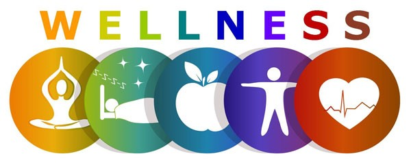

Introduction to Wellness
Wellness is the active process of making choices toward a healthy and fulfilling life. The Global Wellness Institute defines wellness as the active pursuit of activities, choices and lifestyles that lead to a state of holistic health. Wellness is an individual pursuit—we have self-responsibility for our own choices, behaviors and lifestyles but, it is also significantly influenced by the physical, social and cultural environments in which we live. It encompasses multiple dimensions and achieving balance in these areas is essential to overall well-being.
The World Health Organization (WHO) has defined health as, “a state of complete physical, mental and social well-being and not merely the absence of disease or infirmity." Although wellness can be defined similarly, some suggest that wellness is more active and process-oriented whereas health is more of a state of being.
Wellness is different from healthcare. Our healthcare systems use a pathogenic and reactive approach, focused on causes, consequences, diagnosis and treatment of diseases and injuries. In contrast, wellness is a salutogenic and proactive approach, focused on prevention, healthy lifestyles and the pursuit of optimal wellbeing. Ultimately, a solid foundation for wellness helps us prevent and overcome disease, both at present and in the future.
Dimensions of Wellness
There are several key dimensions of wellness. Here are the most common:
- Physical Wellness: Involves regular physical activity, proper nutrition, and adequate rest. Nourishing a healthy body through exercise, nutrition, sleep, etc..
- Mental Wellness: Focuses on mental stimulation and maintaining a positive mindset. Engaging the world through learning, problem-solving, creativity, etc.
- Emotional Wellness: Relates to understanding and expressing emotions effectively.Being aware of, accepting and expressing our feelings, and understanding the feelings of others.
- Social Wellness: The ability to form meaningful relationships and a sense of community.
- Enviromental Wellness: Fostering positive interrelationships between planetary health and human actions. We must ensure where we live in is calm, safe, non-toxic, and supportive of our healths and wellbeing.
- Spiritual Wellness:Engaging in mindfulness and living out our values. Being purposeful and of impact.
- Intellectual Wellness:All about learning and growing. Be curious, creative and think critically.
- Finacial Wellness:Understanding the role money has in wellness can help us make decisions that better improve our lives. Although money doesn't exactly buy happiness, not having enough money can contribute to reduced health and happiness.
- Occupational Wellness:This is finding something to do that gives your life more meaning. often at work, we are a apart of a project execution that brings personal fulfillment upon completion
Wellness Tips
Here are some simple tips for improving your wellness across the different dimensions:
| Dimension | Tip |
|---|---|
| Physical Wellness | Exercise regularly for at least 30 minutes a day. |
| Mental Wellness | Engage in mindfulness or meditation practices. |
| Emotional Wellness | Express your feelings openly and cultivate gratitude. |
| Social Wellness | Spend quality time with loved ones and friends. |
Emotions are central to what it means to be human. We feel deeply, and those emotions often lead us to do things. Emotions are also a key ingredient in well-being. It's hard to imagine well-being without happiness. And emotions like sadness and anxiety can make well-being more difficult to achieve. Some might even use the words happiness and well-being interchangeably
Happiness includes both momentary positive emotions and a deeper sense of meaning and purpose in life. Sometimes these parts are split up in to hedonia (pleasure) and eudaimonia (more like thriving or flourishing), but most of the time when people say "happiness", they are talking about the combination of both. So what are the right steps to take for building happiness? Well, it depends on what personal challenges you face, what situations you’re in, and what’s happening in the world around you. That’s why we need to look inward, to gain clarity on our personal challenges, as well as outward, to gain clarity on the social or cultural challenges we are all dealing in the moderns world.
Wellness generally wraps around everything. Your emotions and happiness impacts your everyday life and determines the quality of your life.
Sleep greatly impacts our overall wellness.the researchers found that the people who had the most extra sleep during the weekends were 19% less likely to develop heart disease than those with the least amount of weekend sleep. The lowered risk of heart disease was even more pronounced for people who regularly experience inadequate sleep on weekdays.
More on Wellness
Click here to learn more on wellness and health
For more information
Berkeleywellbeinginstitute link